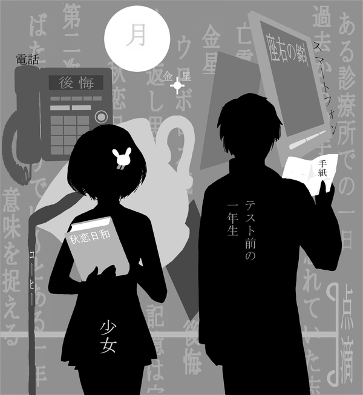

掲載
作品
第二号 (2013)
○画面右上の「掲載作品」をタップすると目次が表示されます
○作品ページでは、ビューワーの左半分・右半分をタップするとそれぞれ次のページ・前のページに移動できます
はじめに
この度は、宮崎大学医学部文芸部学祭部誌「ときわさんざし」第二号をお手に取っていただき、まことにありがとうございます。
今年初めてときわさんざしを開いてくださった方には、はじめまして。
去年、今年と続けてときわさんざしを詠んでくださる方には、お久しぶりです。
去年に引き続き無事に部誌を発刊することが出来、再び皆様のお手元に渡ったことが、何よりも嬉しいです。
今回は、第一部に医学、医学生を題材にした小説、第二部に自由課題にした小説を、と二部構成に致しました。
医学生として普段感じているかもしれない、あったかもしれないことを筆の思うままに綴った小説達。
自分の想像力をはためかせて緻密に織り上げた小説達。
是非、双方お楽しみいただければ、と思います。
宮崎大学医学部文芸部は、今年で部活動歴二年目を迎えました。
歴史は浅いながら、皆様に読んでいただく、活動の最大の要となる部誌は我々一同精一杯の気持ちをこめたものと自負しており ます。
この部誌を読まれた後、少しでも皆様の心に感情のかけらが残せたのならば、これ以上の喜びはありません。
秋深まるこの頃、一時の読書のおともにしてくださったのならば幸いです。
2013年 11月16日
宮崎大学医学部文芸部部長
